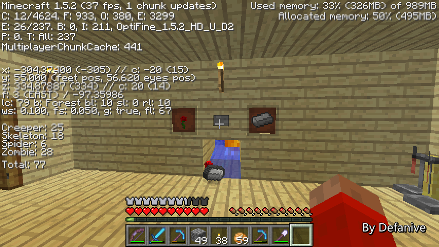
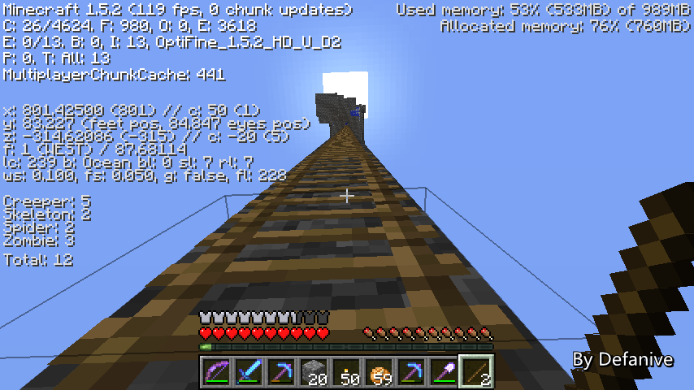

首页
上一页
230
231
232
233
234
235
235
236
237
238
239
240
下一页
末页
defanive2
无尽黑夜
14
要节省材料的情况下做到长周期脉冲
一个简单的办法就是使用公倍数+与门电路
例如图中，左边是周期18，右边周期10
我们可以注意到，只有到了180tick的时候
左边和右边才会同时亮起
因此这样我们就把两个周期的长度乘积起来
得到了一个长脉冲
——来自 MCLive
16638楼
2013-05-19 09:46
defanive2
无尽黑夜
14
上一楼讲错了，应该是90tick的时候会同时亮起
也就是半周期90的钟，即是周期180的钟
具体电路要怎么实现呢
把两个小脉冲的输出加上一个信号缩短器+非门
这样两个小脉冲平时输出都是ON
当一个周期过去之后就变成OFF，持续2tick
——来自 MCLive
16640楼
2013-05-19 09:48
defanive2
无尽黑夜
14
最后把两个脉冲的信号都连接到一个红石火把上
这样这个红石火把就是周期180脉冲的输出了
——来自 MCLive
16641楼
2013-05-19 09:50
defanive2
无尽黑夜
14
整个电路很简单
周期180脉冲如果用普通方法需要23个中继器
如图只需要5个中继器即可
节省了很多材料
如果时钟周期更大，会节省更多的材料
——来自 MCLive
16642楼
2013-05-19 09:52
defanive2
无尽黑夜
14
接下来我们来进行一个简单的应用
做出一个周期1分钟的脉冲
1分钟也就是600tick，半周期也就是300tick
质因数分解300=2x2x3x5x5
然后我们分组为2x2x3和5x5
注意，同种因数必须在同一组内，因此不能分为2x2x5和3x5
也就是需要半周期分别为12和25的小脉冲
——来自 MCLive
16646楼
2013-05-19 09:56
defanive2
无尽黑夜
14
因此我们把左侧的脉冲改为半周期12
也就是2个4tick的中继器+1个3tick的中继器
再加上红石火把的1tick延迟
这样左边就是半周期12的脉冲了
——来自 MCLive
16647楼
2013-05-19 09:58
defanive2
无尽黑夜
14
右侧则需要做成半周期25的脉冲
同理，6个4tick中继器，再加火把的1tick
这样就做成了半周期25的脉冲了
——来自 MCLive
16648楼
2013-05-19 09:59
defanive2
无尽黑夜
14
于是整个1分钟的脉冲就完成了
打开拉杆之后，下方的红石火把每1分钟就会发出一次信号
这个电路使用了11个中继器
而如果用普通的脉冲设计，则需要75个中继器
节省了85%的中继器耗资
——来自 MCLive
16649楼
2013-05-19 10:01
defanive2
无尽黑夜
14
接下来我们再来更极端的应用
我们来做一个周期1小时的脉冲
半周期就是60*60*10/2=18000tick
分解得18000=2x2x2x2x3x3x5x5x5
分组为2x2x2x2x3x3和5x5x5，也就是144和125
因此我们把两边做成半周期144和125的脉冲就可以了
——来自 MCLive
16652楼
2013-05-19 10:04
defanive2
无尽黑夜
14
左右两边改成半周期144和125的脉冲之后
这个电路就是周期1小时的脉冲电路了
这里使用了69个中继器
而如果用普通设计的话，则需要4500个中继器
节省了98.5%的中继器耗资
因此这种电路效率是非常高的
——来自 MCLive
16653楼
2013-05-19 10:13
defanive2
无尽黑夜
14
今天直播就到这里吧
很简单讲解一下电路而已
——来自 MCLive
16654楼
2013-05-19 10:15
defanive2
无尽黑夜
14
没错，第三集的UHC已经发布了！
由于大家网络不好，这一集一直被推迟到现在，不过总算是发出来了！
http://tieba.baidu.com/p/2316311751
16705楼
2013-05-22 00:01
defanive2
无尽黑夜
14
早上又考完了2科的期末考
明天最后再考1科就放假了！
今天来玩玩MC吧
And... Read more books!
——来自 MCLive
16706楼
2013-05-22 00:04
defanive2
无尽黑夜
14
其实昨天也有在玩MC的，不过没有直播
不知道这张图大家有没有看到什么不同之处呢？
——来自 MCLive
16707楼
2013-05-22 00:06
defanive2
无尽黑夜
14
没错，加了1个MOD，SpawnInfo！
什么，没听过这个MOD？！
当然没听过啦，因为这个MOD是我昨天才写的
——来自 MCLive
16709楼
2013-05-22 00:07
defanive2
无尽黑夜
14
当然啦，这里只是借用这个生存世界演示一下效果而已
演示完之后就会把这个MOD删掉，恢复到原版
——来自 MCLive

16710楼
2013-05-22 00:10
defanive2
无尽黑夜
14
这个MOD是做什么的呢，其实是个辅助性MOD
在F3的debug界面会显示刷怪范围内的怪物数量
同时也加了一个/spawnarea [y0 y1]指令
这个指令会计算刷怪范围内y=y0到y=y1的全部刷怪面积
——来自 MCLive
16711楼
2013-05-22 00:13
defanive2
无尽黑夜
14
现在在晚上，使用/spawnarea 0 128
则会计算主角为中心的17x17个chunk中
y=0到128的所有可刷怪的面积
这里可以看到是77526
也就是说17x17个chunk中y=0到128的范围内
有77526个方块可以刷怪
——来自 MCLive
16712楼
2013-05-22 00:16
defanive2
无尽黑夜
14
做这个MOD的目的是什么呢？
如果大家还记得的话，这个神速刷怪塔是我在1.3建造的
但是似乎1.4更新之后效率下降了很多
前几天终于找到原因了
——来自 MCLive
16714楼
2013-05-22 00:19
defanive2
无尽黑夜
14
最主要的问题就是似乎刷怪上限被下降了很多
仔细查了一下代码，刷怪和怪物数量统计范围都是17x17个chunk
但是despawn的范围只在内存中的chunk内进行
也就是15x15个chunk
这样的话，最外围的一圈chunk刷出的怪就不会despawn
但是又被统计在了怪物数量里面
因此怪物会缓慢堆积在周围的一圈chunk里面
导致不再进行刷怪
——来自 MCLive
16715楼
2013-05-22 00:22
defanive2
无尽黑夜
14
如果大家有仔细看上一幅图的话
可以看到总共有79个怪物，但是只有40个在塔内
因此剩余39个全部都是堆积在外围一圈的
这一幅图我把游戏调成了和平
可以看到，虽然和平了但是仍然有39个怪物！
这些怪物都在外围一圈的chunk里面，不在内存里
因此没有被和平模式despawn掉
这些怪物也就是影响我们效率的怪物
——来自 MCLive
16716楼
2013-05-22 00:24
defanive2
无尽黑夜
14
要解决这个问题，办法就是出海航行
一旦外围的chunk被加载之后
怪物由于在128格之外就会马上消失
因此绕着刷怪塔跑一圈就可以做到清理其他怪物
——来自 MCLive
16717楼
2013-05-22 00:37
defanive2
无尽黑夜
14
周围跑了几圈之后怪物数量已经降到12了
这12只怪在哪里我也不清楚。。
有可能在spawn chunk里面
总之这是解决问题的一个办法
——来自 MCLive

16718楼
2013-05-22 00:38
defanive2
无尽黑夜
14
到spawn chunk走过一趟之后
所有的怪物都被清理掉了
现在就可以最高效率的利用这个刷怪塔了
——来自 MCLive
16719楼
2013-05-22 00:45
defanive2
无尽黑夜
14
现在关闭和平的话，可以看到全部的怪物都刷在塔内了
而且刷怪上限仍然是79个
——来自 MCLive
16720楼
2013-05-22 00:46
defanive2
无尽黑夜
14
密密麻麻的怪
自从1.3之后就很久没有这种感觉了
现在效率终于回来了！
——来自 MCLive
16721楼
2013-05-22 00:47
defanive2
无尽黑夜
14
感觉非常爽！
——来自 MCLive
16722楼
2013-05-22 00:48
defanive2
无尽黑夜
14
刷出的大批怪物
——来自 MCLive
16723楼
2013-05-22 00:48
defanive2
无尽黑夜
14
这么一会的成果
——来自 MCLive
16724楼
2013-05-22 00:49
defanive2
无尽黑夜
14
有没有很怀念这个速度
1.3时这个刷怪塔是物资的主要来源
——来自 MCLive
16725楼
2013-05-22 00:50
首页
上一页
230
231
232
233
234
235
235
236
237
238
239
240
下一页
末页